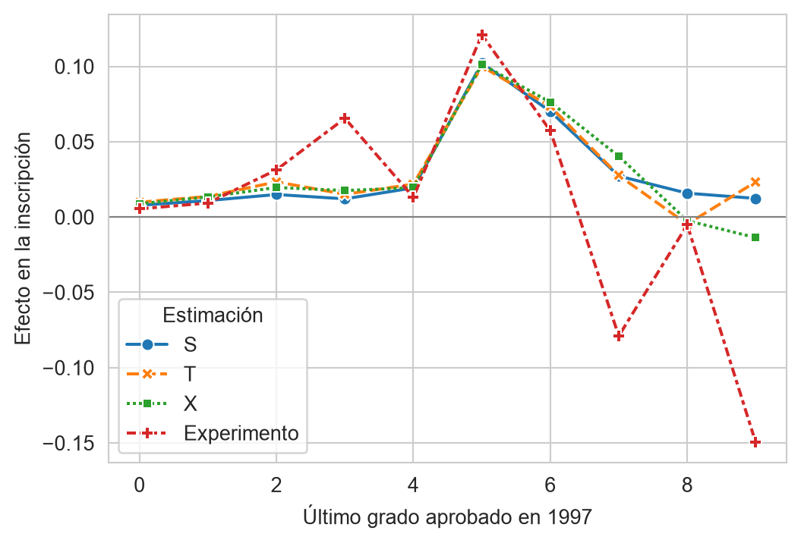

from sklearn.model_selection import GroupShuffleSplit
from sklearn.ensemble import RandomForestRegressor
from matplotlib import pylab as plt
import numpy as np
import pandas as pd
import seaborn as sns
URL_DATOS = ('https://github.com/INGEOTEC/AprendizajeComputacional/'
'releases/download/datos-v1')17 Aprendizaje Computacional e Inferencia Causal
El objetivo de la unidad es conocer y aplicar modelos de aprendizaje computacional para estimar el efecto de una intervención y la manera en que ese efecto cambia entre personas.
Paquetes usados
17.1 Introducción
Hasta aquí el libro trató problemas de predicción, en los que interesa la predicción \(\hat y\) y qué tan cerca está del valor observado. Este capítulo regresa a la otra pregunta que se planteó en Sección 1.2, que es qué pasa con el resultado cuando se interviene, y que es la pregunta de la evaluación de programas. El capítulo de interpretabilidad (Capítulo 16) terminó señalando que ninguna técnica para interpretar un modelo la responde, porque esas técnicas describen lo que el modelo aprendió y no lo que ocurre cuando se cambia una variable.
Quien lee este capítulo ya conoce las herramientas de la inferencia causal, como los experimentos, el emparejamiento o las diferencias en diferencias, y el capítulo no las repite. Lo que agrega el aprendizaje computacional es flexibilidad en dos lugares, que son estimar cómo cambia el efecto de una persona a otra sin fijar de antemano los subgrupos y ajustar por muchas variables de control sin escoger a mano la forma funcional. Athey y Imbens (2019) y Athey (2019) presentan este programa de trabajo y su relación con la econometría.
La advertencia principal del capítulo es que el aprendizaje computacional no sustituye al diseño de investigación. Que la comparación entre tratados y no tratados sea válida depende de cómo se asignó el tratamiento, y ningún algoritmo corrige una asignación que favoreció a un grupo. Por eso el ejemplo del capítulo es un experimento, el de Progresa (Sección B.1.6), en el que la asignación fue al azar y la validez de la comparación no está en duda.
El capítulo empieza con la notación de resultados potenciales y con el efecto promedio del experimento de Progresa. Después muestra la diferencia entre predecir un resultado y estimar un efecto, y termina con los meta-aprendices, que convierten cualquier algoritmo de regresión en un estimador de efectos heterogéneos y permiten decidir a quién dirigir un programa según el efecto que se espera en cada persona.
17.2 Resultados Potenciales
En el marco de resultados potenciales cada persona tiene dos resultados, \(y(1)\) si recibe el tratamiento y \(y(0)\) si no lo recibe (Rubin 1974), y Imbens y Rubin (2015) es la referencia general de este marco. En Progresa el tratamiento es vivir en una localidad que recibió el programa en 1998 y el resultado es estar inscrito en la escuela en el otoño de ese año. El indicador de tratamiento se denota con \(w \in \{0, 1\}\), que en este capítulo no tiene relación con los coeficientes \(\mathbf w\) de un modelo lineal usados en los capítulos anteriores. El efecto del tratamiento en la persona \(i\) es
\[ \tau_i = y_i(1) - y_i(0). \tag{17.1}\]
De cada persona solo se observa uno de los dos resultados, el que corresponde al tratamiento que recibió, es decir,
\[ y_i = w_i\, y_i(1) + (1 - w_i)\, y_i(0), \tag{17.2}\]
de manera que \(\tau_i\) nunca se observa, y Holland (1986) lo llama el problema fundamental de la inferencia causal. La consecuencia para el aprendizaje computacional es directa, porque en predicción cada observación trae su respuesta \(y\) y el error del modelo se mide en un conjunto de prueba, mientras que aquí ninguna observación trae su \(\tau_i\) y por lo tanto no existe un conjunto de prueba con la respuesta correcta.
Lo que sí se puede estimar con los datos son promedios de los efectos individuales. El efecto promedio del tratamiento es
\[ \tau = \mathbb E[y(1) - y(0)], \tag{17.3}\]
y el efecto promedio condicional, que es el objeto central del capítulo, es
\[ \tau(x) = \mathbb E[y(1) - y(0) \mid x]. \tag{17.4}\]
El efecto condicional \(\tau(x)\) dice cuánto cambia en promedio el resultado de las personas con características \(x\), y cuando \(\tau(x)\) no es constante se dice que el efecto es heterogéneo.
El primero de los dos supuestos que se necesitan para estimar estos efectos es que, entre personas con las mismas características, el tratamiento no dependa de los resultados potenciales, lo que se conoce como independencia condicional y se escribe \((y(1), y(0)) \perp w \mid x\). El segundo es que toda persona tenga probabilidad positiva de recibir y de no recibir el tratamiento, lo que se conoce como traslape y se escribe \(0 < e(x) < 1\), donde \(e(x) = \mathbb P(w = 1 \mid x)\) es la probabilidad de tratamiento (propensity score). En un experimento ambos supuestos se cumplen por diseño, porque el sorteo decide \(w\) sin mirar a las personas, mientras que en datos observacionales son supuestos que no se pueden verificar con los datos.
Bajo esos supuestos, y llamando \(\mu_w(x) = \mathbb E[y \mid x, w]\) a la función de regresión del grupo \(w\), el efecto condicional es la diferencia de dos funciones de regresión, como se muestra a continuación:
\[ \tau(x) = \mu_1(x) - \mu_0(x). \tag{17.5}\]
Las funciones \(\mu_1\) y \(\mu_0\) son funciones de regresión como las de todos los capítulos anteriores y se pueden estimar con cualquier algoritmo. La dificultad es que un algoritmo que predice bien \(\mu_1\) y \(\mu_0\) por separado no necesariamente estima bien su diferencia, y de ese problema tratan los meta-aprendices (Sección 17.5).
17.3 El Experimento de Progresa
Progresa daba becas a los hogares pobres de localidades rurales a cambio de que sus hijas e hijos asistieran a la escuela, y el orden en que las localidades de la evaluación entraron al programa se sorteó, de manera que unas lo recibieron en 1998 y las de control hasta finales de 1999 (Sección B.1.6, Schultz (2004)). Las características de cada niña o niño son las medidas en 1997, antes del programa, y son el sexo, la edad, el último grado aprobado y la inscripción en ese año, como se muestra en el siguiente código:
progresa = pd.read_csv(f'{URL_DATOS}/progresa_inscripcion.csv')
VARS = ['mujer', 'edad', 'grado', 'inscrito_1997']
X = progresa[VARS].astype(float)
w = progresa['progresa'].to_numpy()
y = progresa['inscrito_1998'].to_numpy().astype(float)
loc = progresa['localidad'].to_numpy()El conjunto tiene \(14,996\) niñas y niños de \(491\) localidades, de las cuales \(308\) recibieron el programa en 1998 y \(183\) son de control, de manera que la proporción de niñas y niños en localidades tratadas es \(0.6260\).
Si el sorteo funcionó, las características previas al programa deben ser parecidas en los dos grupos, porque el azar no tiene preferencia por ningún tipo de localidad. La Tabla 17.1 muestra la media de cada característica en las localidades de control y en las que recibieron Progresa.
| Característica | Control | Progresa |
|---|---|---|
| Mujer | \(0.4923\) | \(0.4788\) |
| Edad | \(10.3525\) | \(10.3296\) |
| Último grado aprobado | \(3.4137\) | \(3.4407\) |
| Inscripción en 1997 | \(0.8561\) | \(0.8572\) |
En un experimento el efecto promedio (Ecuación 17.3) se estima con la diferencia entre la media del resultado de los tratados y la de los controles, donde \(N_1\) y \(N_0\) son el número de tratados y de controles, es decir,
\[ \hat \tau = \frac{1}{N_1} \sum_{i: w_i = 1} y_i - \frac{1}{N_0} \sum_{i: w_i = 0} y_i, \tag{17.6}\]
que se calcula con el siguiente código:
def dif_medias(y, w):
return y[w == 1].mean() - y[w == 0].mean()
ate = dif_medias(y, w)El sorteo fue por localidad, así que las niñas y niños de una misma localidad no son observaciones independientes y el error estándar debe calcularse remuestreando localidades completas y no personas. Se usa el bootstrap (Sección A.2) en el que cada muestra se forma eligiendo localidades con reemplazo y conservando a todas las personas de cada localidad elegida, como se muestra a continuación:
def bootstrap_localidades(y, w, loc, B=500, seed=0):
rng = np.random.default_rng(seed)
claves = np.unique(loc)
indices = [np.flatnonzero(loc == c) for c in claves]
salida = np.empty(B)
for b in range(B):
sel = rng.integers(0, len(claves), len(claves))
i = np.concatenate([indices[s] for s in sel])
salida[b] = dif_medias(y[i], w[i])
return salida
ate_b = bootstrap_localidades(y, w, loc)
ate_se = ate_b.std()
ate_ic = np.percentile(ate_b, [2.5, 97.5])La proporción inscrita en las localidades de control es \(0.8137\) y la diferencia de medias estima que el programa la cambia en \(0.0317\), con un error estándar de \(0.0116\) y un intervalo de confianza del 95% de \([0.0110, 0.0555]\). El error estándar que supone que las personas son observaciones independientes sería \(0.0064\), por lo que el error estándar por conglomerados es \(1.8\) veces el ingenuo y la incertidumbre es mayor de lo que sugeriría tratar a cada persona como un sorteo propio.
Un efecto promedio como éste esconde diferencias grandes entre personas, porque en los primeros grados de primaria casi todos están inscritos con o sin programa y el efecto no puede ser grande ahí. La pregunta del resto del capítulo es para quién es mayor el efecto del programa.
17.4 Predecir no es Estimar un Efecto
Una reacción natural ante un presupuesto limitado es dirigir el programa a quienes tienen mayor riesgo de no inscribirse, lo que convierte la focalización en un problema de predicción como los de Sección 3.9 y Sección 5.8. Para revisar si esa idea funciona, los datos se dividen en un conjunto de entrenamiento y uno de prueba (Sección 2.2), pero la partición se hace por localidad, de manera que todas las niñas y niños de una localidad quedan en el mismo conjunto, por la misma razón que el bootstrap se hizo por localidad. El siguiente código hace la partición:
particion = GroupShuffleSplit(n_splits=1, test_size=0.3, random_state=0)
tr, te = next(particion.split(X, y, groups=loc))
T, G = X.iloc[tr], X.iloc[te]
y_t, y_g, w_t, w_g = y[tr], y[te], w[tr], w[te]El modelo de riesgo es un bosque aleatorio (Sección 11.4) entrenado solo con las localidades de control, porque el riesgo que interesa es el de no inscribirse cuando no hay programa, es decir, el modelo estima \(\mu_0(x)\). Se usa un bosque de regresión sobre la variable 0/1, cuya predicción es la proporción de inscritos entre observaciones parecidas, y la función bosque fija los hiperparámetros que se usan en todo el capítulo, como se muestra en el siguiente código:
def bosque():
return RandomForestRegressor(n_estimators=200, min_samples_leaf=20,
n_jobs=-1, random_state=0)
m0 = bosque().fit(T[w_t == 0], y_t[w_t == 0])
riesgo = 1 - m0.predict(G)Como el conjunto de prueba viene de un experimento, se puede medir el efecto del programa dentro de cualquier grupo de personas con la diferencia de medias de ese grupo. La función efecto_por_grupo lo hace, y se aplica a los quintiles del riesgo predicho en el conjunto de prueba:
def efecto_por_grupo(grupo, y, w):
filas = []
for g in np.unique(grupo):
m = grupo == g
filas.append(dict(grupo=g, n=int(m.sum()),
control=y[m & (w == 0)].mean(),
efecto=dif_medias(y[m], w[m])))
return pd.DataFrame(filas).set_index('grupo')
q_riesgo = pd.qcut(riesgo, 5, labels=False, duplicates='drop') + 1
ef_riesgo = efecto_por_grupo(q_riesgo, y_g, w_g)| Quintil de riesgo | Niñas y niños | Inscripción en control | Efecto |
|---|---|---|---|
| 1 | \(952\) | \(0.9943\) | \(0.0057\) |
| 2 | \(876\) | \(0.9916\) | \(0.0007\) |
| 3 | \(915\) | \(0.9828\) | \(-0.0004\) |
| 4 | \(966\) | \(0.8367\) | \(0.0413\) |
| 5 | \(859\) | \(0.2849\) | \(0.0394\) |
La Tabla 17.2 muestra que el modelo de riesgo ordena bien a las personas, porque la inscripción en las localidades de control cae hasta \(0.2849\) en el quintil de mayor riesgo, pero el efecto mayor no está ahí sino en el quintil 4, con un efecto de \(0.0413\) contra \(0.0394\) del quintil de mayor riesgo. En los quintiles de bajo riesgo casi todos se inscriben sin el programa y no hay nada que mejorar, mientras que en el de mayor riesgo están muchos jóvenes que ya habían dejado la escuela y a quienes una beca difícilmente regresa, de manera que el efecto tiende a concentrarse en quienes están por decidir si continúan. En términos de la notación, el riesgo es \(1 - \mu_0(x)\) y el efecto es \(\mu_1(x) - \mu_0(x)\), que son dos funciones distintas de \(x\), y por eso Kleinberg et al. (2015) distinguen los problemas de política que se resuelven con una predicción de los que requieren estimar un efecto causal.
17.5 Meta-aprendices
Se llama meta-aprendiz a un procedimiento que toma un algoritmo de regresión cualquiera, llamado aprendiz base, y lo usa para estimar el efecto condicional \(\tau(x)\) (Künzel et al. 2019). En este capítulo el aprendiz base es siempre el bosque de la función bosque, y los tres meta-aprendices que se presentan se entrenan en el conjunto de entrenamiento \(\mathcal T\) y se evalúan en el conjunto de prueba \(\mathcal G\).
17.5.1 S-learner
El S-learner usa un solo modelo (single) \(\mu(x, w)\) que recibe el tratamiento como una variable más, y el efecto estimado es la diferencia entre la predicción con el tratamiento y sin él, es decir,
\[ \hat\tau_S(x) = \hat\mu(x, 1) - \hat\mu(x, 0). \tag{17.7}\]
La debilidad de este método es que el tratamiento es una variable entre varias y, si predice poco comparado con las demás, el algoritmo la usa poco o la ignora, de manera que el efecto estimado se sesga hacia cero. El siguiente código entrena el S-learner y estima el efecto en el conjunto de prueba:
T_w = T.assign(progresa=w_t)
s_modelo = bosque().fit(T_w, y_t)
tau_s = (s_modelo.predict(G.assign(progresa=1))
- s_modelo.predict(G.assign(progresa=0)))17.5.2 T-learner
El T-learner usa dos modelos (two), \(\hat\mu_1\) entrenado con los tratados y \(\hat\mu_0\) entrenado con los controles, y estima el efecto con
\[ \hat\tau_T(x) = \hat\mu_1(x) - \hat\mu_0(x), \tag{17.8}\]
que es la Ecuación 17.5 con las funciones estimadas. El modelo \(\hat\mu_0\) es el modelo m0 que ya se entrenó para el riesgo. La debilidad de este método es que cada modelo se ajusta para predecir bien su propio grupo, con su propio error, y la diferencia de dos predicciones ruidosas es más ruidosa que cada una, por lo que puede encontrar heterogeneidad donde solo hay ruido. El siguiente código completa el T-learner:
m1 = bosque().fit(T[w_t == 1], y_t[w_t == 1])
tau_t = m1.predict(G) - m0.predict(G)17.5.3 X-learner
El X-learner empieza igual que el T-learner, entrenando \(\hat\mu_0\) y \(\hat\mu_1\), y después imputa a cada persona el resultado potencial que no se observó para calcular con él un efecto individual, que para los tratados y para los controles es
\[ d_i^1 = y_i - \hat\mu_0(x_i), \qquad d_i^0 = \hat\mu_1(x_i) - y_i. \tag{17.9}\]
Con esos efectos imputados se entrena un modelo \(\hat\tau_1\) sobre \(d^1\) con los tratados y otro \(\hat\tau_0\) sobre \(d^0\) con los controles, y por último los dos se combinan con
\[ \hat\tau_X(x) = e\,\hat\tau_0(x) + (1 - e)\,\hat\tau_1(x), \tag{17.10}\]
donde \(e\) es la proporción de tratados. La ventaja de este método es que los modelos de la segunda etapa aprenden directamente el efecto y no un resultado, y que aprovecha mejor los datos cuando un grupo es mucho mayor que el otro. El siguiente código implementa el X-learner:
d1 = y_t[w_t == 1] - m0.predict(T[w_t == 1])
d0 = m1.predict(T[w_t == 0]) - y_t[w_t == 0]
tau1 = bosque().fit(T[w_t == 1], d1)
tau0 = bosque().fit(T[w_t == 0], d0)
e = w_t.mean()
tau_x = e * tau0.predict(G) + (1 - e) * tau1.predict(G)Los efectos estimados por los tres meta-aprendices se guardan en un diccionario para analizarlos juntos:
taus = dict(S=tau_s, T=tau_t, X=tau_x)El promedio de los efectos estimados en el conjunto de prueba es \(0.0315\) con el S-learner, \(0.0340\) con el T-learner y \(0.0334\) con el X-learner, y la diferencia de medias del experimento en ese mismo conjunto es \(0.0238\). El promedio de los efectos individuales estimados debe parecerse al efecto promedio, porque el efecto promedio es el promedio de \(\tau(x)\) sobre la población. La desviación estándar de los efectos estimados es \(0.0602\), \(0.0733\) y \(0.0600\), respectivamente, e indica cuánta heterogeneidad encuentra cada método.
17.5.4 Evaluación sin Observar el Efecto
Con un meta-aprendiz no se puede calcular un error como en el capítulo de rendimiento (Capítulo 2), porque el efecto individual \(\tau_i\) no se observa. Lo que sí permite el experimento es comprobar si el ordenamiento es correcto, formando grupos según el efecto estimado y midiendo en cada grupo el efecto con la diferencia de medias, de manera que si el meta-aprendiz ordena bien el efecto medido crece de un grupo al siguiente. El siguiente código lo hace con los cuartiles del efecto estimado por cada meta-aprendiz:
ef_cuartil = {k: efecto_por_grupo(pd.qcut(v, 4, labels=False,
duplicates='drop') + 1,
y_g, w_g)
for k, v in taus.items()}| Cuartil del efecto estimado | S-learner | T-learner | X-learner |
|---|---|---|---|
| 1 | \(-0.0324\) | \(-0.0301\) | \(-0.0320\) |
| 2 | \(0.0116\) | \(-0.0076\) | \(0.0249\) |
| 3 | \(0.0333\) | \(0.0377\) | \(0.0251\) |
| 4 | \(0.0729\) | \(0.0828\) | \(0.0777\) |
La Tabla 17.3 muestra que en el cuartil de mayor efecto estimado el efecto medido es \(0.0729\), \(0.0828\) y \(0.0777\) con el S-learner, el T-learner y el X-learner, respectivamente, que son mayores que la diferencia de medias de todo el conjunto de prueba, y el menor de los tres equivale a \(3.1\) veces esa diferencia. En el cuartil de menor efecto estimado los efectos medidos son \(-0.0324\), \(-0.0301\) y \(-0.0320\), que son menores que esa diferencia de medias. Cada cuartil tiene al menos \(1102\) observaciones de las \(148\) localidades del conjunto de prueba, por lo que estas diferencias de medias tienen un error estándar del orden de dos o tres puntos porcentuales y no conviene leer las diferencias pequeñas entre métodos como evidencia de que uno ordena mejor que otro.
Otra forma de revisar los efectos estimados es compararlos contra una variable que la literatura identifica como decisiva, y Schultz (2004) encontró que el efecto de Progresa en la inscripción se concentra en la transición de la primaria a la secundaria. La Figura 17.1 compara, por último grado aprobado, el promedio del efecto estimado por cada meta-aprendiz con la diferencia de medias del experimento en el conjunto de prueba.
Código
df = pd.DataFrame(taus).assign(grado=G['grado'].to_numpy())
df = df.groupby('grado').mean()
df['Experimento'] = efecto_por_grupo(G['grado'].to_numpy(), y_g, w_g)['efecto']
df = df.reset_index().melt(id_vars='grado', var_name='Estimación',
value_name='efecto')
fig, ax = plt.subplots(figsize=(6, 4))
_ = sns.lineplot(df, x='grado', y='efecto', hue='Estimación',
style='Estimación', markers=True, ax=ax)
_ = ax.axhline(0, color='gray', linewidth=0.8)
_ = ax.set(xlabel='Último grado aprobado en 1997',
ylabel='Efecto en la inscripción')
En la Figura 17.1, los tres meta-aprendices tienen su mayor efecto estimado en quienes habían aprobado el grado 5, es decir, quienes en 1998 debían decidir si terminaban la primaria o entraban a la secundaria, con un efecto promedio estimado de hasta \(0.1021\), mientras que en los grados 0 a 4 el promedio del efecto estimado no pasa de \(0.0234\). Los meta-aprendices encuentran ese patrón sin que se les indique dónde buscar, y la diferencia de medias del experimento en el grado \(5\) es \(0.1210\). La línea del experimento es más errática que las de los modelos porque cada punto es una diferencia de medias calculada con pocas observaciones, en particular en los grados 7 a 9, que tienen a lo más \(176\) niñas y niños cada uno, mientras que los modelos comparten información entre grados vecinos y suavizan el efecto.
17.5.5 Focalizar por Riesgo o por Efecto
Con estos efectos estimados se puede regresar al problema de política que abrió la sección anterior. Con presupuesto para una cuarta parte de las niñas y niños (Sección 5.8.4), se compara elegir a quienes tienen mayor riesgo predicho contra elegir a quienes tienen mayor efecto estimado, y en ambos casos se mide con el experimento el efecto entre los elegidos y entre los no elegidos, como se muestra en el siguiente código:
def efecto_seleccion(puntaje, y, w, proporcion=0.25):
sel = puntaje >= np.quantile(puntaje, 1 - proporcion)
return dif_medias(y[sel], w[sel]), dif_medias(y[~sel], w[~sel])
ef_sel = {k: efecto_seleccion(v, y_g, w_g)
for k, v in dict(Riesgo=riesgo, **taus).items()}| Criterio de selección | Efecto en los elegidos | Efecto en el resto |
|---|---|---|
| Mayor riesgo predicho | \(0.0332\) | \(0.0143\) |
| Mayor efecto, S-learner | \(0.0769\) | \(0.0058\) |
| Mayor efecto, T-learner | \(0.0861\) | \(0.0026\) |
| Mayor efecto, X-learner | \(0.0719\) | \(0.0059\) |
La Tabla 17.4 muestra que entre los elegidos por el efecto estimado con el X-learner el programa cambia la inscripción en \(0.0719\), que es mayor que el \(0.0332\) de los elegidos por riesgo, con una razón de \(2.2\) entre ambos. La correlación entre el riesgo predicho y el efecto estimado con el X-learner es \(0.3901\), de manera que los dos criterios eligen a grupos de personas en buena parte distintos y, con el mismo presupuesto, el criterio cambia cuántas inscripciones adicionales logra el programa.
Elegir por efecto estimado maximiza el resultado medido del programa, pero ese no es el único objetivo legítimo de una política pública. Un programa puede querer atender a quienes están peor aunque el efecto en ellos sea menor, y esa es una decisión de quien define la política, igual que la de los costos de cada error en Sección 5.8. Además, estos efectos se refieren a un solo resultado, la inscripción en 1998, y un programa de transferencias tiene otros resultados, como la salud, la nutrición o el consumo de los hogares, en los que el orden de las personas podría ser diferente.
TipActividad
Repetir el análisis de Sección 17.5 con inscrito_1999 como resultado, que mide la inscripción un año y medio después del inicio del programa. Calcular el efecto promedio con su error estándar por conglomerados, entrenar el T-learner y el X-learner y dibujar el promedio del efecto estimado por grado aprobado en 1997. Discutir si los grados con mayor efecto son los mismos que en 1998 y por qué podrían recorrerse, considerando que las mismas personas son un año mayores.
17.6 Resumen
Los resultados potenciales definen el efecto individual de un tratamiento como la diferencia entre el resultado con tratamiento y sin él, y como de cada persona solo se observa uno de los dos, el efecto individual nunca se observa y lo que se estima son promedios, que son el efecto promedio y el efecto condicional \(\tau(x)\). En un experimento el efecto promedio se estima con una diferencia de medias, y su error estándar debe respetar la unidad que se sorteó, que en Progresa fue la localidad y no la persona.
Predecir un resultado y estimar un efecto son tareas distintas, porque el riesgo depende de \(\mu_0(x)\) y el efecto de la diferencia \(\mu_1(x) - \mu_0(x)\). Quienes tienen mayor riesgo de no inscribirse no son necesariamente quienes más responden a una beca, y por eso focalizar un programa con uno u otro criterio lleva a resultados distintos.
Los meta-aprendices convierten un algoritmo de regresión en un estimador de \(\tau(x)\). El S-learner usa un solo modelo con el tratamiento como variable, el T-learner usa un modelo por grupo y el X-learner modela directamente los efectos imputados a cada persona. Como el efecto individual no se observa, los meta-aprendices no se evalúan con un error de predicción sino comprobando, con los datos de un experimento, que los grupos con mayor efecto estimado tienen también mayor efecto medido.